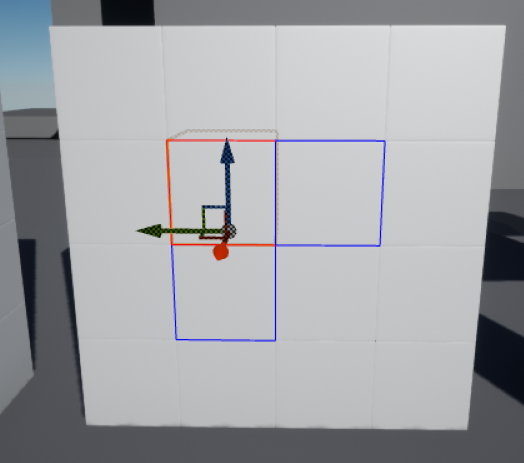
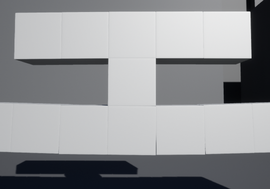

Neokaiju
[info on student project]
Student Project | Available on Steam | Single Player | One level
My Contributions
Design of physics-based building destruction system

Destruction system

|
In Neokaiju, the character needed to be able to tear apart buildings.
By separating larger buildings into blocks, we can use physics constraints to stitch
the blocks together so that they fall apart in a convincing manner. In the image to the right, the red-highlighted block owns physics constraints connecting it to the blue-highleted blocks. |
 |
| However, it would be a waste of processing power to let all buildings simulate physics at all times. It would also give unbroken buildings an elastic sort of feeling, as the small amount of give in the physics constraints would make larger structures sag under their own weight. |  |
|
To solve this problem, each building block starts without physics, and whenever one is broken,
a "Block Manager" will run a flood fill algorithm on neighbors until it finds one that connects
to a static part of the level. In the image to the right, the two highlighted blocks act as the foundation, and will never simulate physics. |
 |
If the fill algorithm runs out of blocks before that happens, physics is enabled on the entire
group of blocks so that they fall as one unit.
Using Unreal's physics constraints made removal of joints under significant stress easy. Apply
additional damage to blocks that hit each other or the ground with enough force, and we have a
convincing, physics based building destruction system.